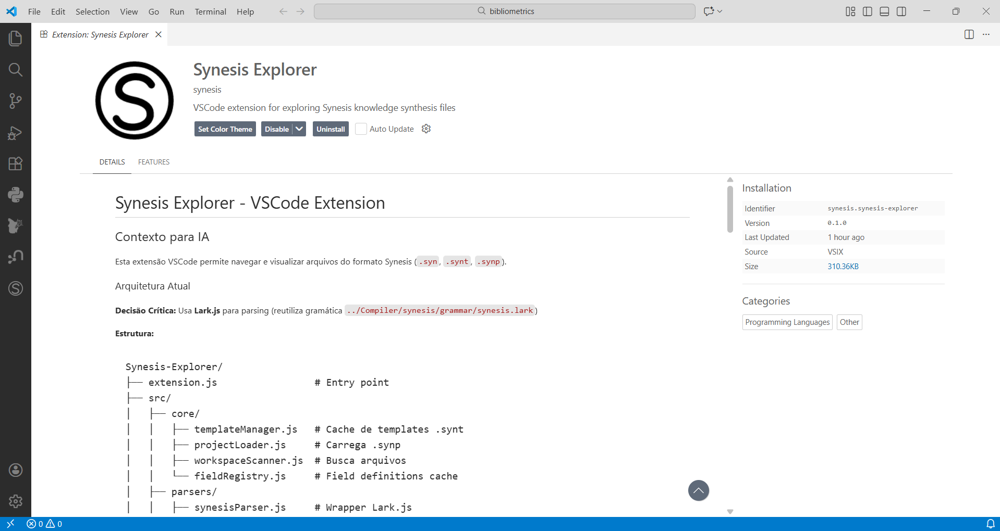
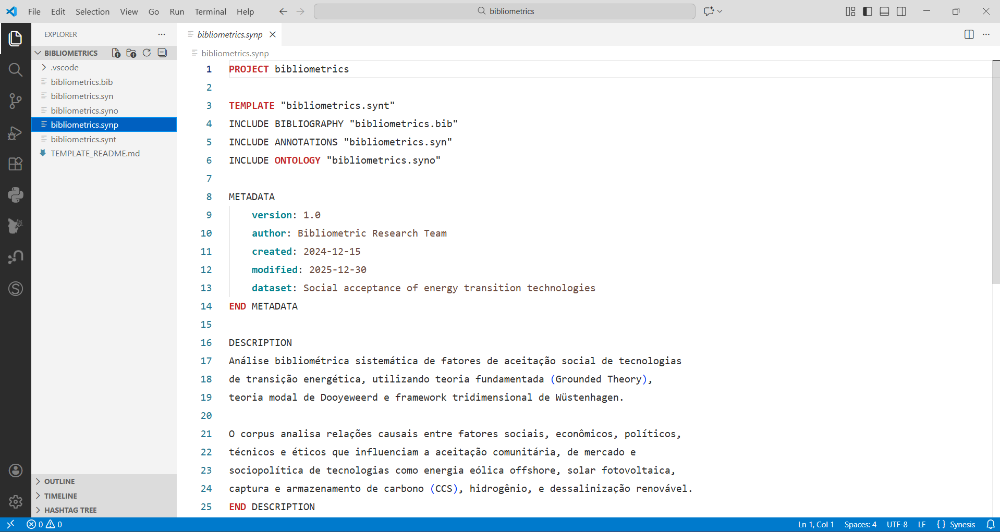
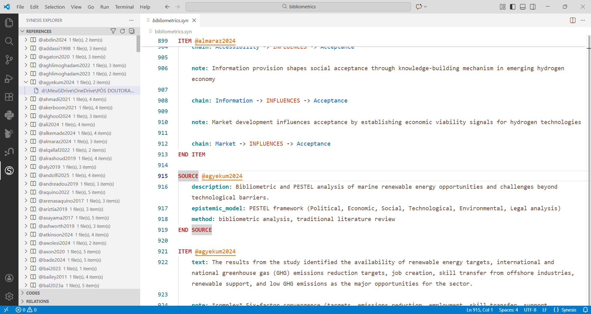
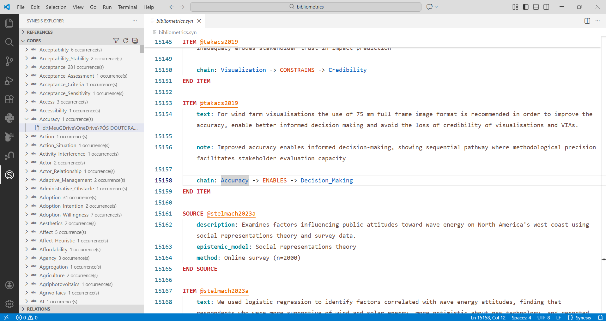
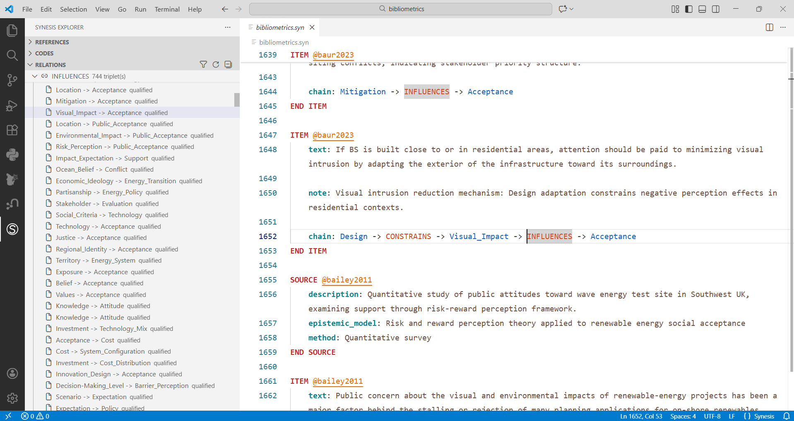

1 Guia rápido: a extensão Synesis para VS Code
Objetivo: ajudar você a instalar e usar a extensão Synesis (versão 0.17) para escrever e navegar arquivos Synesis (.synp, .synt, .syn, .syno, .synr). Esta extensão também é conhecida como Synesis Explorer.
A interface da extensão está em inglês.
1.1 O que a extensão faz
- Valida os arquivos enquanto você digita e completa campos, códigos e relações
- Mostra referências, códigos, relações, ontologia e campos do template em painéis laterais
- Abre grafos de relações e o resumo (abstract) das referências
- Codifica um trecho selecionado com o
synesis-coder - Conversa com um banco de grafos do projeto no chat do VS Code

1.2 Requisitos
- VS Code
- Python 3.10 ou superior
- O compilador e o servidor de linguagem, que fazem a análise (a extensão é a interface):
pip install synesis synesis-lsp1.3 Instalação
- No VS Code, abra a aba de extensões (
Ctrl+Shift+X) - Procure por Synesis (publicador
synesis-lang) - Clique em Install
Para instalar a partir de um arquivo .vsix, use o menu ... da aba de extensões e Install from VSIX….

1.4 Primeiro projeto
Numa pasta vazia:
synesis initAbra a pasta no VS Code. O ícone do Synesis aparece na barra de atividades e os painéis se preenchem.

1.5 Os painéis

| Painel | Mostra |
|---|---|
| References | as fontes (SOURCE), com os itens dentro |
| Codes | os códigos e cada ocorrência |
| Relations | as cadeias (CHAIN), agrupadas por fonte |
| Ontology Topics | os tópicos da ontologia; com ROLE HIERARCHY, a árvore de conceitos |
| Ontology (Annotations) | onde os conceitos são usados nos .syn |
| Template Fields | os campos do template, por escopo |
Alguns painéis aparecem conforme o tipo de arquivo aberto. Clique numa entrada para ir à linha exata. Cada painel tem botões de atualizar e filtrar.



Na árvore da ontologia, o menu de contexto de um conceito oferece Subtree Evidence: os itens do conceito e de todos os descendentes.
1.6 Grafos e resumos
| Ação | Atalho (Windows/Linux) | Mac |
|---|---|---|
| Grafo de relações por fonte | Ctrl+Alt+G |
Cmd+Shift+G |
| Grafo por arquivo | Ctrl+Alt+F |
Cmd+Shift+F |
| Grafo por item | Ctrl+Alt+I |
Cmd+Alt+I |
| Resumo (abstract) da referência | Ctrl+Shift+A |
Cmd+Shift+A |
| Codificar a seleção com IA | Ctrl+Shift+I |
Cmd+Shift+I |


1.7 Edição
- Diagnósticos em tempo real: erros e avisos sublinhados e no painel Problems (
Ctrl+Shift+M) - Autocompletar: campos, códigos, relações, valores de listas, papéis depois de
ROLEe propriedades deEXPORT - Hover: definição do campo; em conceitos, pais, filhos e quantidade de evidências
- Ir à definição (
F12) e renomear (F2) códigos e referências em todo o projeto - Snippets: digite
field-chain,field-scale,field-ordered… ouSOURCE,ITEM,ONTOLOGYe pressioneTab; os blocos de anotação trazem os campos obrigatórios do seu template - Temas: Synesis Dark e Synesis Light
1.8 Codificar com IA
Instale o synesis-coder (pip install synesis-coder), configure a chave no .env do projeto, selecione um trecho num .syn e use Synesis: Code Selection (Ctrl+Shift+I). Veja Codificação com IA.
1.9 Conversar com o grafo
A extensão registra um participante de chat que consulta um banco ArcadeDB do projeto, criado pelo synesis-graph. Os comandos Synesis: Settings (conexões e provedores), Synesis: Select Chat Graph Database e Synesis: Show Turn Evidence and Queries configuram o chat e mostram a trilha de auditoria de cada resposta. As chaves ficam no armazenamento seguro do VS Code.
1.10 Configurações
Em Settings, procure por “Synesis” (prefixo synesisExplorer.):
| Configuração | Para quê |
|---|---|
lsp.pythonPath |
caminho do executável synesis-lsp, se não estiver no PATH |
lsp.enabled |
liga ou desliga o servidor |
diagnostics.enabled |
mostra os sublinhados |
diagnostics.checkCodes |
avisa cada código ausente da ontologia (desligado por padrão: um resumo no .synp) |
inlayHints.enabled |
mostra “(Autor, Ano)” depois das referências |
semanticHighlighting.enabled |
realce baseado na árvore sintática |
completion.autoImportCodes |
oferece os códigos da ontologia ao completar |
coder.path |
caminho do synesis-coder |
1.11 Problemas comuns
Os painéis estão vazios. Confira se a pasta aberta tem um arquivo .synp e se o synesis-lsp está instalado (veja o canal de saída Synesis LSP).
Um painel não aparece. Vários dependem do tipo de arquivo aberto: abra um .syn ou .syno.
“Failed to start Synesis LSP”. Informe em synesisExplorer.lsp.pythonPath o caminho completo do executável.
Relações não aparecem. Verifique se o template tem um campo TYPE CHAIN e se há cadeias anotadas.
1.12 Pronto para usar
Com isso, você já consegue escrever, validar, navegar e visualizar seus dados Synesis no VS Code.